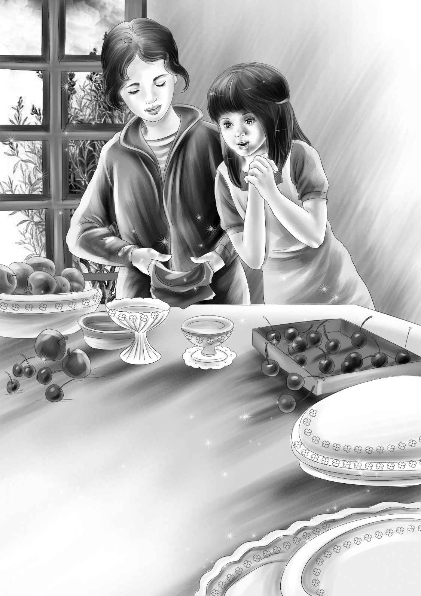

Pie Day
入夜了，每个人都又困又乏，就连迈克和班尼也没聊多久。他们给花花铺了块软软的小地毯，可它并没有躺在上面，而是睡在了迈克床下的硬地板上。
“小狗都这样，”迈克说，“从不肯老实地待在为它们安排好的地方。”
“公主总是睡在简姑婆的房里，望望习惯睡在杰西的卧室，”班尼说，“其实，望望是杰西的小狗，不是我的。”
“不会吧？”迈克惊讶地说，“我一直以为它是你的小狗。”
“它是我们所有人的小宝贝。”班尼说。
“我懂的，班尼。”迈克打起了哈欠，他已经困得没法儿争辩了。
“晚安。”班尼说着回到了自己的房间。
两个孩子很快就睡熟了。
与此同时，在矿上的新家里，伍德太太和帕特躺在各自的新床上也进入了梦乡。第二天伍德太太要起得很早。
早上六点钟，伍德太太便叫醒了帕特，并准备了鸡蛋火腿、吐司、麦片粥和两杯牛奶当早餐。
“我已经等不及要做馅饼了，”伍德太太对帕特说，“你赶紧去洗脸刷牙，吃完了早饭过来帮我干活儿吧！”
帕特说：“我猜迈克和班尼也会一大早过来的。他们什么热闹都不想错过，是吧，妈？”
“没错，他们就喜欢赶热闹！”伍德太太宠溺地笑着。
果然，伍德太太还没洗完碗，孩子们就来了。
“我们是搭顺风车过来的，”班尼说，“快看维莉手里拿的是什么？”
维莉捧着一块写有大大黑字的小木板——这就是准备挂在门楣上的小店招牌了。
伍德太太念道：“‘迈克妈妈的小店’，多响亮的名字！”
亨利爬上去，将招牌钉到了门楣上。
“伍德太太，需要我们做什么，您就尽管吩咐吧！”杰西兴奋得双颊绯红。
“来，让我告诉你们一个做馅饼的窍门。”伍德太太说，“千万不能用手碰饼皮儿。擀皮的时候，要把饼皮儿夹在两张光面纸中间。杰西、维莉，你俩把那几个大碗里的起酥油和面粉拌匀。我来教你们！”

“杰西知道怎么做馅饼！”班尼说，“她是做馅饼高手。”
“我绝对相信这一点！”伍德太太笑着说，“小伙子们，你们把烤炉温度调到400度，你们买的烤炉很好使呐！完了以后，再把30个烤盘放到长桌上，摆成一排。”
不一会儿，大家就各自忙碌起来。伍德太太说：“开张第一天，我只做两种馅儿的饼——樱桃馅和苹果馅的。小伙子们负责开大罐头，然后放到桌子上，千万别让小狗靠过来！”
“我把它们拴起来。”迈克说。
“哦，别！”杰西赶紧阻止道，“别拴望望。听着，望望，卧倒！”望望立刻躺了下来，抬头看着杰西，摇了摇尾巴，果然没有起身。
“要是花花也能这样就好了！”迈克说，“可眼下我只能把它拴起来。”
“以后我们一起训练它就行了！”班尼说，“不过这得耗费整整一盒无花果糖呢！花花要是学会了卧倒，就奖励一颗无花果糖，如果中途它站起来了，你就大喊一声‘错了’……就这么训练。”
“那改天我做点儿无花果饼干好了。”伍德太太笑着说。
伍德太太和孩子们一共做了30个馅饼。姐妹俩帮忙擀着夹在纸中的饼皮儿，再把擀好的皮放到烤盘里。整个过程中，她们的手都没碰到饼皮儿。
“多有趣啊！”维莉说。
“你们这些孩子，帮着干活儿还这么开心。”伍德太太慈爱地看着维莉。
“有客人上门啦！”迈克站在门口喊道，“是镇上的太太。”
女客人笑盈盈地走了进来：“听说你们这里有馅饼卖？”
“没错！”迈克说，“可是馅饼现在还没做好呢！”
“那什么时候能做好，小家伙？”
“我不是什么小家伙！”迈克回答道，“我去问问我妈妈吧！”
“大概十点钟可以做好！”伍德太太的喊声从屋里传来。
“十点左右吧！”迈克又重复了一遍。
“那我待会儿再来吧！”女客人说，“我要苹果馅饼。”
“我们会给你留一份的！”迈克说，“我记得住你的样子，你很漂亮。”
“哦，谢谢夸奖！”女客人笑道，“你是迈克吧？”
“没错，我就是迈克，做馅饼的是我妈妈。”
馅饼终于烤好了，香味扑鼻，金黄酥脆。女客人也回来取馅饼了。
她说：“我跟街上的人一讲，他们都说要过来买你家的饼。”
“希望够矿上的工人吃，”伍德太太说，“我们做馅饼主要是为了他们啊。”
“那咱们赶紧再做一些饼吧！”杰西说，“要是他们买不到会失望的。”
姐妹俩立刻又擀了些皮儿，迈克和班尼则打开了另一罐樱桃罐头。幸亏他们做了这样的安排。中午，休息的哨声一响，工人们就从采矿处蜂拥过来，都想在新开的小店吃上热乎乎的馅饼，很快，所有的馅饼都被抢购一空。
“连我们自己吃的都没了。”迈克郁闷地说。
“别急，迈克，我还留着一张饼呐！”迈克的妈妈说，“就是烤得有点过了，我来把它切成七份吧！”
“我喜欢烤得稍稍有点焦的饼。”班尼说。
大家围坐在长桌旁吃起了午餐。麦琪送来一大篮子三明治和沙拉，还有加了冰块的粉色柠檬水，每个人都吃得香喷喷。
“吃完饭咱们要做什么呢？”维莉问道。
“馅饼是不用再做了，”伍德太太说，“咱们今天做的饼已经够多了。”
“要不然去赛跑吧？”班尼说，“让两只小狗好好赛一场！”
“没问题！”迈克说，“到我家原来的粉房子后面去比吧？现在那儿空荡荡的，场地大着呢！”
听到这话，杰西想赶紧将餐具洗完，她将热肥皂水倒进洗碗盆里，小心翼翼地把盘子逐个放进去，用海绵仔细地擦拭着。“我喜欢干这个！”她自言自语道。
最后，她用热水冲洗了一遍，将它们放到沥水篮中。
“碗碟还烫着呐，它们会自己风干的，咱们可以不用管了。”杰西说。
几个孩子迫不及待地带着两只小狗来到粉房子的后面，手里还拿着刚从商店买的两根大骨头。
亨利发话了：“现在，迈克牵着花花，杰西牵着望望。”
“都站到这根线上来！”班尼说。
“没错！”亨利赞同道，“先让小狗闻闻骨头的味道！然后我拿着其中一根走到篱笆那儿去，班尼，你拿着另外一根骨头，跟着我！”
两只小狗受不了骨头的诱惑，巴不得赶紧跑去追亨利，只可惜被杰西和迈克牢牢拽住了。
“维莉，你来发令！”亨利站在篱笆那边喊道，“数到三，你们就放开小狗！”
亨利和班尼坐了下来，高举着骨头，好让狗狗看见。
“一、二、三，跑！”随着维莉的一声号令，两只小狗犹如离弦的箭一般冲了出去。望望直奔向亨利，花花则跑向班尼。它们的速度都快得惊人，而且不分伯仲，偶尔会互相超越，但很快就被对方追上，然后又开始并驾齐驱。
正在这时，花花突然转了个方向，速度也慢了下来，就像汽车在紧急刹车制动似的。接着，它跑了回去，四处嗅嗅，开始扒拉起来。
“怎么回事？”亨利困惑地喊道。
“花花怎么了？”迈克也叫了起来。
花花继续刨着地面，望望见状也不跑了，它慢慢走到花花身边，也开始用爪子刨起了泥土。
突然，花花发出了一声低吼，这吼叫声显然不是针对望望的。
“那里有什么古怪？”杰西困惑地问。孩子们聚拢过来，仔细打量着两只小狗。泥土飞扬，花花仍然吼叫个不停。
“这里一定埋了什么东西，”亨利说，“说不定是根骨头。”
“不可能是骨头！”迈克说，“花花决不会对一根骨头又吼又叫。”
“好吧，管它是什么，反正它被埋得很深。”亨利说，“瞧这个洞！”
花花龇牙咧嘴地咆哮着，随着一声震耳欲聋的大吼，它用森森的白牙咬住了一件东西，并从洞里拖了出来，然后继续坐在地上低嚎——被拖出的是一顶蓝色的男式帽子！